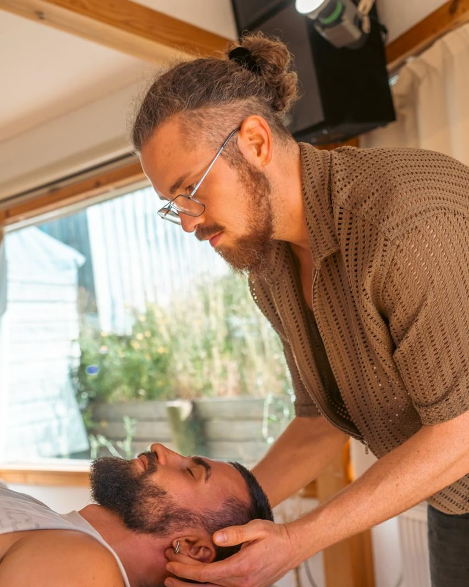
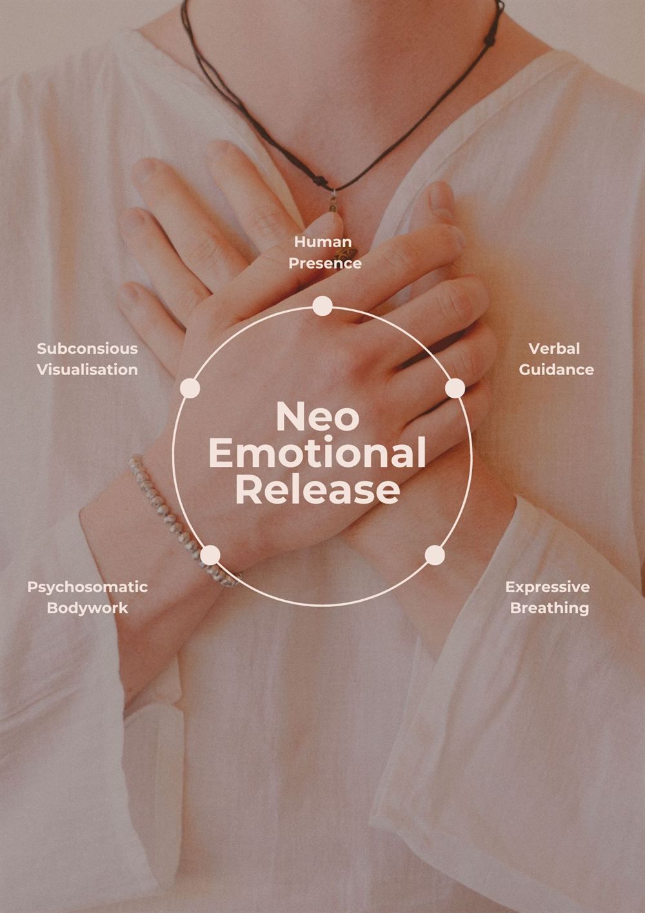
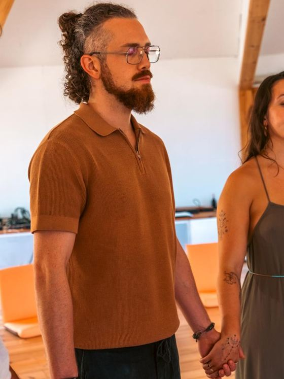

In der Session hat Franz mich so liebevoll gehalten, mich durch meine Trauer begleitet und mir gezeigt, Grenzen zu setzen. Nicht gegen andere, sondern für mich. Glaubenssätze wie „Sonst bin ich nicht geliebt“ kann ich seitdem immer mehr loslassen. Ich kann mich jetzt viel besser selbst halten und lieben.

Start · Dein Weg · 01
Dein UnVerschämt-Monat
1:1-Monatsbegleitung mit Franz
- Kennenlerngespräch vorab
- Reflexionsfragebogen und Vorbereitungsguide
- 1:1 Emotional-Release-Session
- Integrationsleitfaden mit Tools zur Unterstützung
- Wöchentliche Check-ins mit Impulsen und Experimenten
- Integrations-Session zum Abschluss
- WhatsApp-Support während des ganzen Monats
Dein Weg durch den Monat
Wie wir zusammenarbeiten.
Vorab
Kennenlerngespräch
Ein sicherer Raum, in dem du dich gesehen fühlst und offen von dir und deinen Emotionen erzählen kannst. 45 Minuten, kostenlos.
Woche 1
1Ankommen und vorbereiten
- Fragebogen zur Reflexion
- Hilft mir, deine tiefsten Muster zu erkennen und dich vor, während und nach der Session bestmöglich zu begleiten.max. 1 Woche vor der Session
- Vorbereitungsguide
- Tipps für deine technische, körperliche und damit emotionale Vorbereitung.2–3 Tage vor der Session
Woche 2
2Emotional Release
- Emotional-Release-Session
- Eintauchen in deinen Körper durch Atemarbeit, Visualisierung, Arbeit mit inneren Anteilen und mehr.ca. 180 Minuten mit Ankommen und Landen
- Integrationsleitfaden
- Tools für eine sanfte Integration deiner Erfahrung.direkt nach der Session
Woche 3
3Integration
- Wöchentlicher Check-in per WhatsApp
- Impulse von mir und Experimente für dich — in deinem Tempo.
Woche 4
4Integration und Abschluss
- Wöchentlicher Check-in per WhatsApp
- Wir bleiben in Kontakt, während sich das Neue setzt.
- Integrations-Session
- Gemeinsame Reflexion und Raum für deinen Prozess: Erkenntnisse, Gefühle, Herausforderungen und offene Fragen.ca. 2 Wochen nach der Session
Durchgehend
WhatsApp-Support vor und nach der Session
„Ich durfte erfahren, was für eine STARKE Frau ich bin.“
Wichtig: Das ist Kathis persönliche Erfahrung. Meine Arbeit ersetzt keine ärztliche oder psychotherapeutische Behandlung, und ich mache keine Heilversprechen. Bitte setze Medikamente niemals ohne Rücksprache mit deiner Ärztin oder deinem Arzt ab.
Ehrlich gesagt
Passt das zu dir?
Das ist was für dich, wenn
- du dich schon lange verstehst und trotzdem nichts anders wird
- du endlich fühlen willst, statt noch mehr zu wissen
- du dir einen Monat lang Zeit und Raum für dich nehmen willst
Das ist nichts für dich, wenn
- du eine Diagnose oder Behandlung suchst
- du gerade in einer akuten Krise steckst — dann zuerst ärztliche oder therapeutische Hilfe
- du eine schnelle Lösung ohne dein Zutun erwartest
Investment
Dein UnVerschämt-Monat
Vor Ort
München & Regensburg
Session ca. 180 Min.
420 €
Online
Überall
per Video
Session ca. 180 Min.
390 €
für 4 Wochen Begleitung
„Ich war erstaunt, wie tief die Session tatsächlich ging.“
Franz hat einen liebevollen Raum erschaffen und sich so viel Zeit genommen, dass ich mich sicher fühlen und öffnen konnte. Seitdem tut sich immer wieder etwas — wie ein Stein, den man ins Wasser wirft und der all die Wellen auslöst.
„Endlich ein Ansatz, der wirklich zu mir passt.“
Ich habe vorher vieles ausprobiert. Jetzt wird mir klar, warum ich immer so blockiert war. So tief reinzugehen und mit meinen Anteilen zu arbeiten, fühlt sich total schön und befreiend an.
Ehrlich und transparent
Ich mache dir keine Heilversprechen und locke dich nicht mit Wundermethoden. Meine Arbeit ist Prozess- und Persönlichkeitsarbeit: Sie ersetzt keine ärztliche oder psychotherapeutische Behandlung, sie kann sie höchstens begleiten.
Ich erkläre dir offen, wie wir arbeiten. Den Rahmen setzen wir gemeinsam im Kennenlerngespräch — denn was du brauchst, hängt davon ab, wo du auf deiner Reise gerade stehst.

Meine Arbeit
Emotional Release, Schritt für Schritt.
Platzhalter: Wie ich arbeite und was Emotional Release, Possibility Management und Unshaming miteinander zu tun haben — in deinen Worten.
- PräsenzIch bin ganz da. Ohne zu bewerten, ohne zu reparieren.
- Begleitung durch meine StimmeIch führe dich durch den Prozess, du musst nichts richtig machen.
- Ausdrucksvolles AtmenDer Atem öffnet, was lange festgehalten wurde.
- Psychosomatische KörperarbeitDruckpunkte und Berührung dort, wo dein Körper Spannung hält.
- VisualisierungInnere Bilder und Anteile, mit denen wir arbeiten.
„Ich dachte immer, meine Sensibilität ist falsch.“
Ich hatte immer Angst, traurig zu werden, zu weinen und Verletzungen wirklich zu fühlen. Also habe ich alles zu Tode erklärt, damit ich bloß nicht traurig sein muss. Heute weine ich, wenn mir danach ist, statt es wegzudrücken. Und danach bin ich richtig befreit, statt zwei Wochen an einem Thema zu leiden.
Nach deinem Monat
Wenn es passt, geht es weiter.
Wenn du spürst, dass du weiter mit mir arbeiten möchtest, zeige ich dir gern Möglichkeiten — und wir schauen gemeinsam, was zu dir passt.
02
Einzelbegleitung
Mehrere Monate an deiner Seite. Sessions, Integration und alles dazwischen.

03
Retreat
Ein paar Tage in der Gruppe — atmen, fühlen, tanzen.
Häufig gestellte Fragen
Das wollen fast alle wissen.
Geht das auch online?
Ja. Online arbeiten wir per Video, du liegst bei dir zu Hause, ich führe dich mit meiner Stimme. Luca aus Bamberg war skeptisch:
„Vor der Session konnte ich mir kaum vorstellen, wie so etwas online abläuft und ob ich wirklich tief in meine Emotionen eintauchen kann. Franz hat mich Schritt für Schritt durch die Session geführt und mir jederzeit ein sicheres Gefühl gegeben. Ob das online wirklich geht? JA, das geht!“
Muss ich mich ausziehen?
Nein. Bequeme Kleidung reicht. Ich arbeite über der Kleidung, und wir klären vorher, welche Körperbereiche für dich okay sind.
Was, wenn nichts kommt?
Dann kommt nichts, und auch das ist eine Information. Dein System entscheidet über das Tempo, nicht dein Ehrgeiz.
Was passiert nach dem Monat?
Zwei Wochen nach der Session schauen wir in der Integrations-Session gemeinsam zurück. Wenn du danach weitergehen willst, zeige ich dir die Möglichkeiten — ohne Druck.
Wie sage ich ab oder verschiebe?
Bis 48 Stunden (zwei Werktage) vorher kostenlos, bei Terminen vor Ort bitte eine Woche vorher.
Ersetzt das eine Psychotherapie?
Nein. Emotional Release ist Prozess- und Persönlichkeitsarbeit, kein Heilverfahren. Bei psychischen Erkrankungen und in akuten Krisen gehört ärztliche oder psychotherapeutische Hilfe an die erste Stelle.
Sofort erreichbar: Notruf 112 · Telefonseelsorge 0800 111 0 111 · Krisendienst Bayern 0800 655 3000
Noch nicht so weit?
Probier es erst mal kostenlos →
Nächster Schritt
Erst reden, dann entscheiden.
45 Minuten, kostenlos und unverbindlich.
Lass uns sprechen